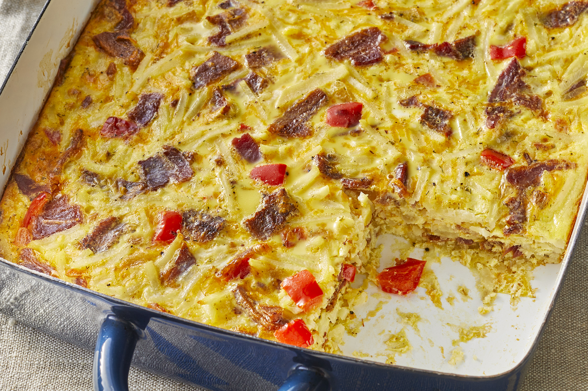

Recipe Description
A hearty bacon, egg, and hash brown casserole for the bacon lover in all of us. Feel free to use turkey bacon rather than pork!
Ingredients
- 1 ½ pounds thick sliced bacon
- ½ cup chopped sweet onion
- ½ cup chopped red bell pepper
- 12 eggs
- 1 cup milk
- 1 (16 ounce) package frozen hash brown potatoes, thawed
- 1 cup shredded Cheddar cheese
- 1 teaspoon salt
- ½ teaspoon ground black pepper
- ¼ teaspoon dried dill
Steps
- Preheat oven to 350 degrees F (175 degrees C). Lightly grease a 9x13-inch baking dish.
- Place bacon in a large skillet and cook over medium-high heat, turning occasionally, until evenly browned, about 10 minutes. Drain bacon slices on paper towels; reserving 2 tablespoons drippings in the skillet. Crumble bacon and set aside.
- Cook and stir onion and bell pepper over medium heat in reserved drippings until tender, about 5 minutes; remove with slotted spoon.
- Whisk eggs and milk in a large bowl. Fold hash browns, Cheddar cheese, salt, pepper, dill, onion mixture, and crumbled bacon into egg mixture; transfer to prepared baking dish.
- Bake in preheated oven until a knife inserted near the center comes out clean, 35 to 45 minutes. Serve and Enjoy!